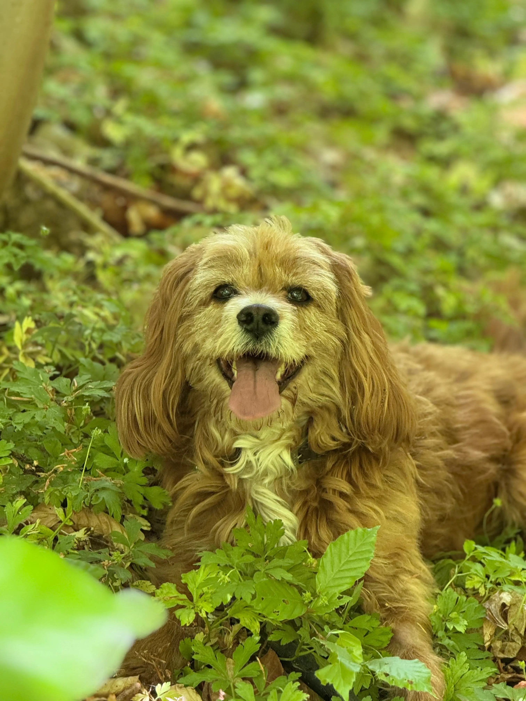
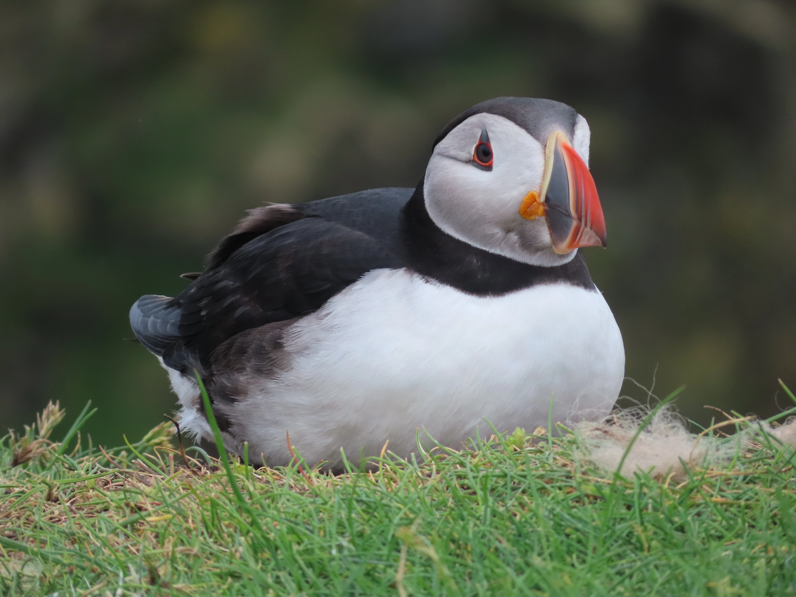
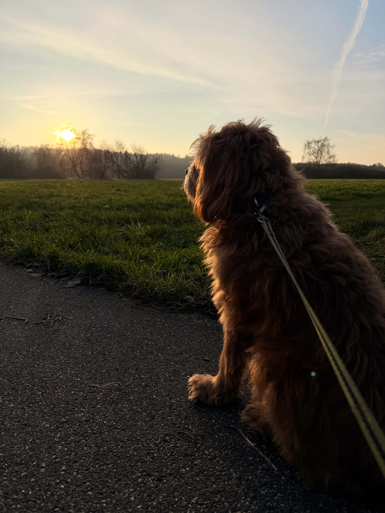
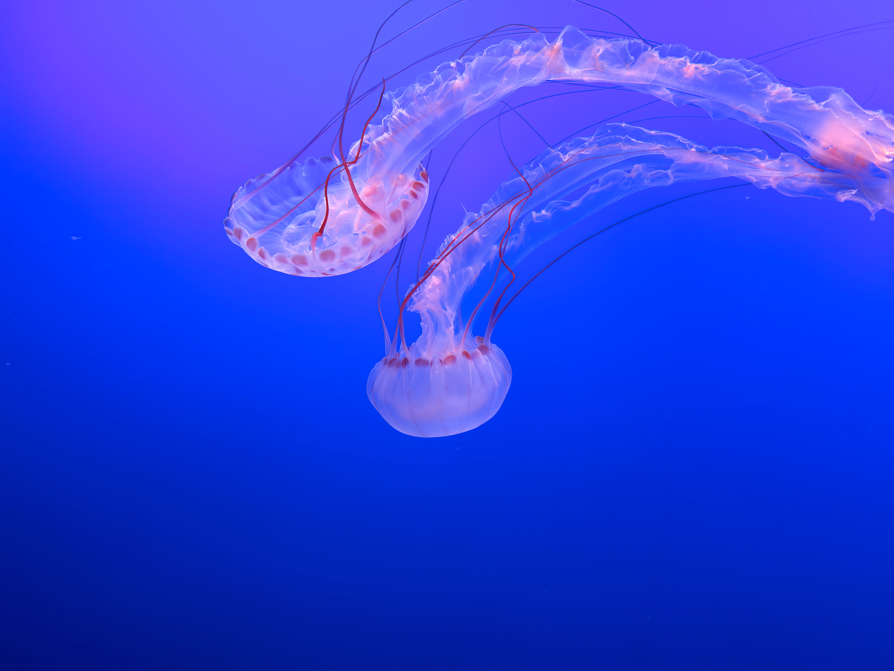
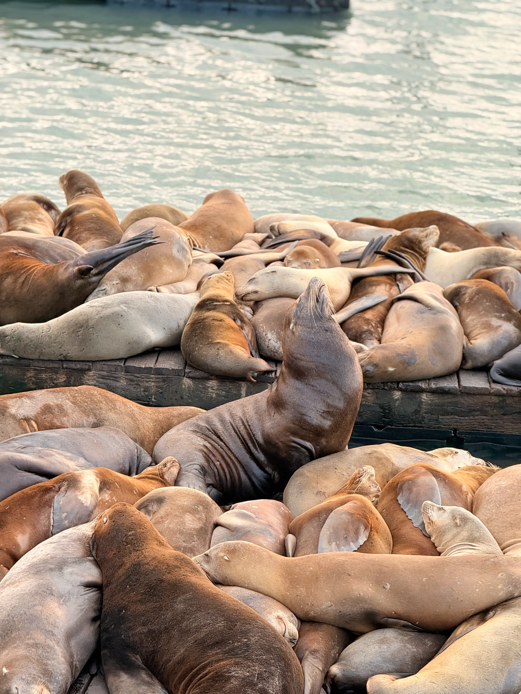
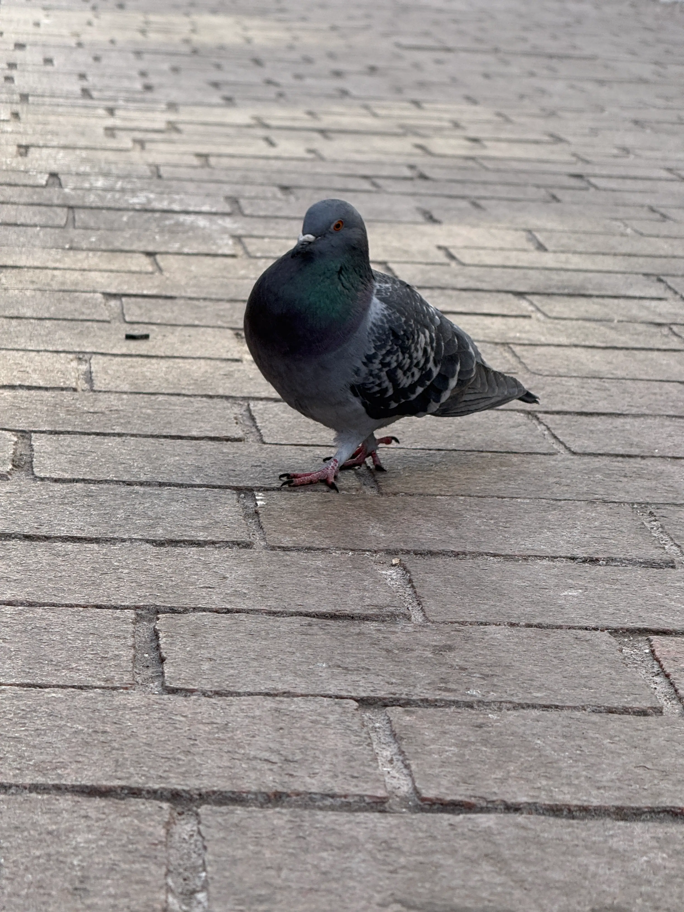
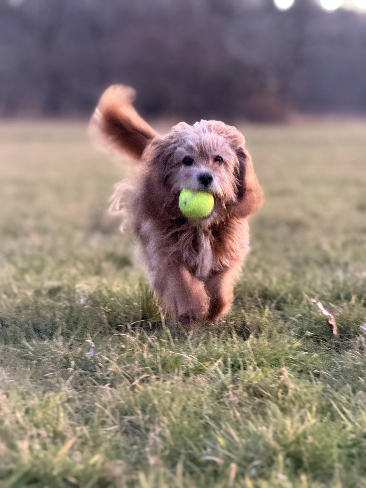
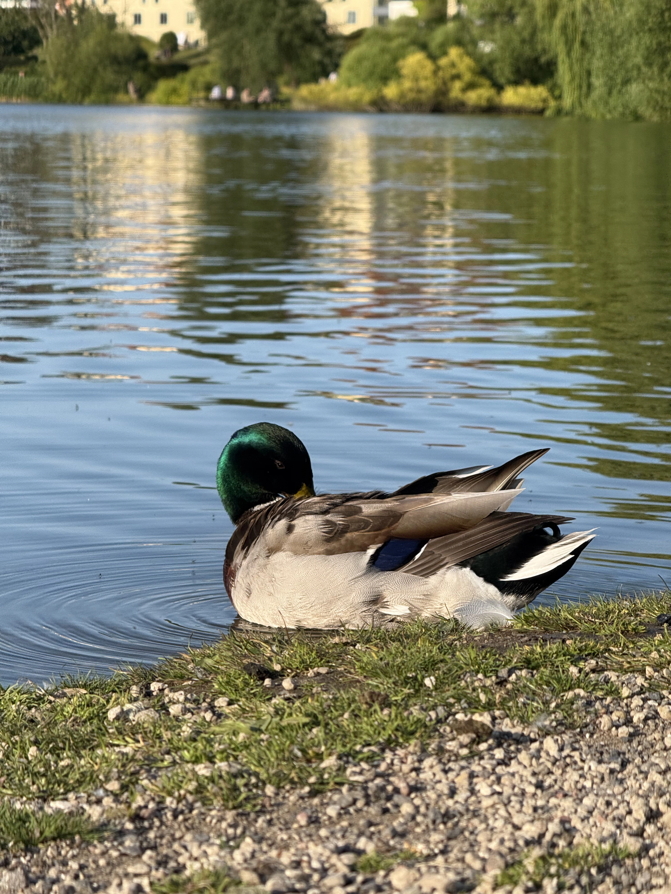
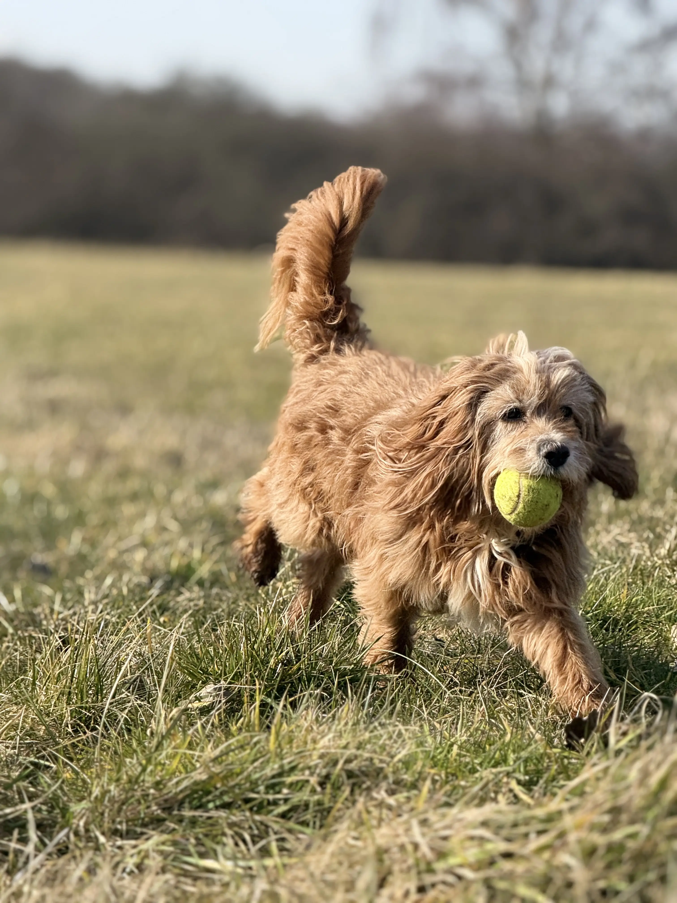

Om dyrefotografi
Dyrefotografi handler om at indfange liv og bevægelse i naturen. Det kræver tålmodighed og opmærksomhed på små detaljer.
Ved at arbejde med naturligt lys og rolige omgivelser kan billederne blive mere levende og autentiske.
Galleri









Tips og tricks
- Vær tålmodig – dyr bevæger sig hurtigt.
- Brug naturligt lys frem for blitz.
- Hold afstand og undgå at forstyrre dyret.
- Fotografer i dyrets øjenhøjde.
- Tag mange billeder for at fange det rette øjeblik.